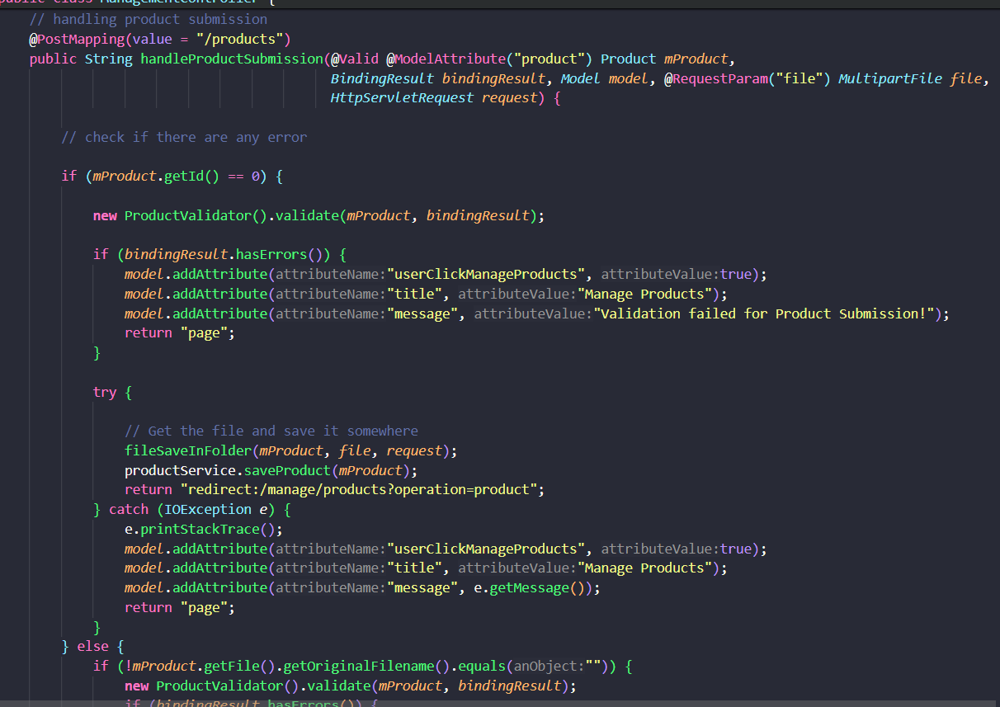
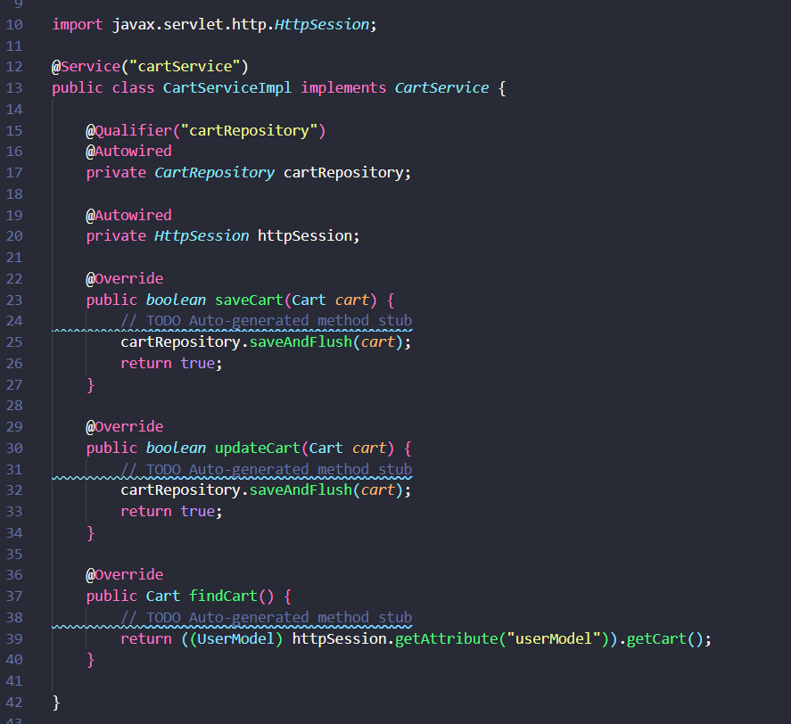

Refactorización de Código
La refactorización es un proceso esencial en el desarrollo de software para mantener el código limpio y fácil de mantener. A continuación, se detallan algunas de las áreas clave donde se necesitan mejoras.
Code Smells
Los "code smells" son indicadores de problemas potenciales en el código que pueden requerir refactorización. A continuación se detallan algunos de los code smells observados en el proyecto:
Funcionalidades Principales:
- Gestión de Usuarios: Registro, inicio de sesión y administración de perfil.
- Gestión de Productos: Navegar por una lista de productos, ver detalles y agregar productos al carrito.
- Carrito de Compras: Añadir, editar y procesar pedidos.
- Seguridad: Sistema basado en roles con Spring Security (ADMIN, USER).
Long Method:
Los métodos largos y complejos dificultan el mantenimiento. Se recomienda dividir funciones largas en métodos más pequeños y específicos para mejorar la legibilidad y mantenibilidad.
Duplicate Code:
El código duplicado es una señal de refactorización necesaria. Consolidar código repetitivo en un método compartido puede reducir errores y facilitar cambios futuros.
Middle Man:
Clases como CartServiceImpl actúan como intermediarios sin valor agregado. Esto puede indicar acoplamiento excesivo y puede requerir reestructuración para eliminar intermediarios innecesarios.
Primitive Types:
El uso de tipos primitivos para conceptos clave puede ser sustituido por clases más descriptivas, proporcionando un contexto de dominio más rico y claro.
Uncommunicative Name:
Los nombres poco comunicativos pueden complicar la comprensión del código. Los nombres de métodos como saveCategory y findCategoryById deben ser más descriptivos y claros.
Falta de pruebas unitarias:
La falta de pruebas unitarias compromete la estabilidad del código. Implementar pruebas unitarias es crucial para asegurar la confiabilidad del sistema.
Técnicas de Refactorización
Para abordar los problemas detectados, se aplicarán las siguientes técnicas de refactorización:
- Long Method: Dividir métodos largos para mejorar la legibilidad.
- Duplicate Code: Consolidar código duplicado para evitar inconsistencias.
- Primitive Obsession: Encapsular tipos primitivos en clases más descriptivas para mejorar la semántica y el contexto del dominio.
- Feature Envy: Ajustar métodos para evitar dependencia excesiva entre clases y promover una mejor cohesión.
- Lazy Class: Evaluar clases menos utilizadas y considerar si pueden fusionarse con otras o eliminarse por completo para optimizar la estructura del código.